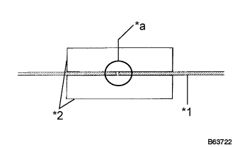
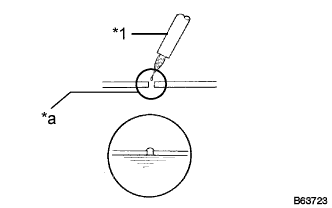

WINDOW GLASS ANTENNA WIRE > REPAIR |
| 1. INSPECT WINDOW GLASS ANTENNA WIRE |
| *1 | Antenna Wire |
| *2 | Tin Foil |
| *3 | Tester Probe |
 |
Check the voltage at the center of each wire as shown in the illustration.
| 2. REPAIR WINDOW GLASS ANTENNA WIRE |
|  |
Clean the broken wire tips with grease, wax and silicone remover.
| *a | Repair Point |
| *1 | Antenna Wire |
| *2 | Masking Tape |
Place masking tape along both sides of the wire to be repaired.
Thoroughly mix the repair agent.
|  |
Using a fine tip brush, apply a small amount of the repair agent to the wire.
| *a | Repair Point |
| *1 | Fine Tip Brush |
After a few minutes, remove the masking tape.